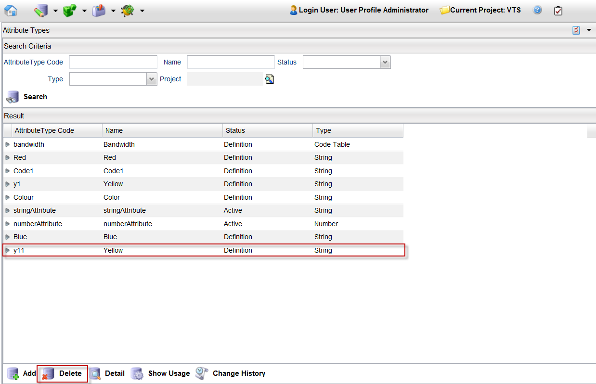
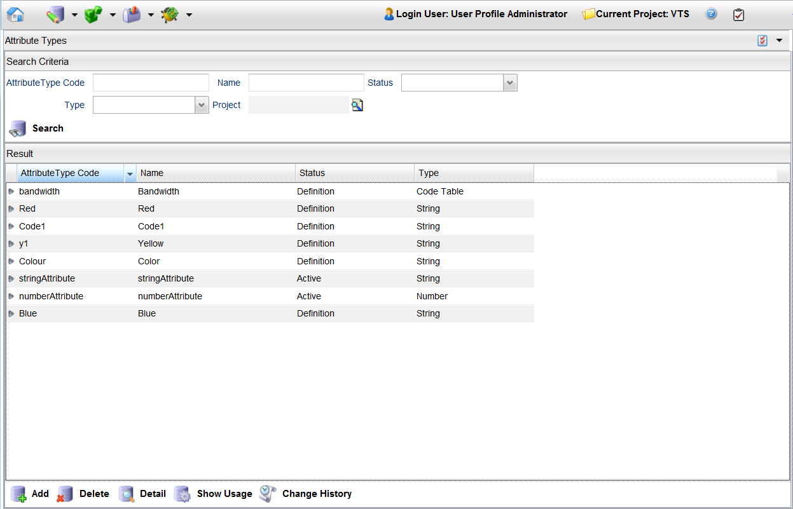

Delete an Attribute Type
To delete an attribute, follow these steps:
Note: A project must be opened to delete an attribute type.
- From the menu bar, click Designer > Attribute Types.
- Search for all the attributes and select the one you want to delete, or search for a particular attribute.
- Select the attribute (for example, y11) and click the Delete button.

- A confirmation dialog appears. Click the Yes button.
- The selected attribute is successfully deleted from the project.

Notes:
- You cannot delete an attribute that has its Status field set to Active.
- You can select multiple attributes from the search results, and then select the Delete button.
|